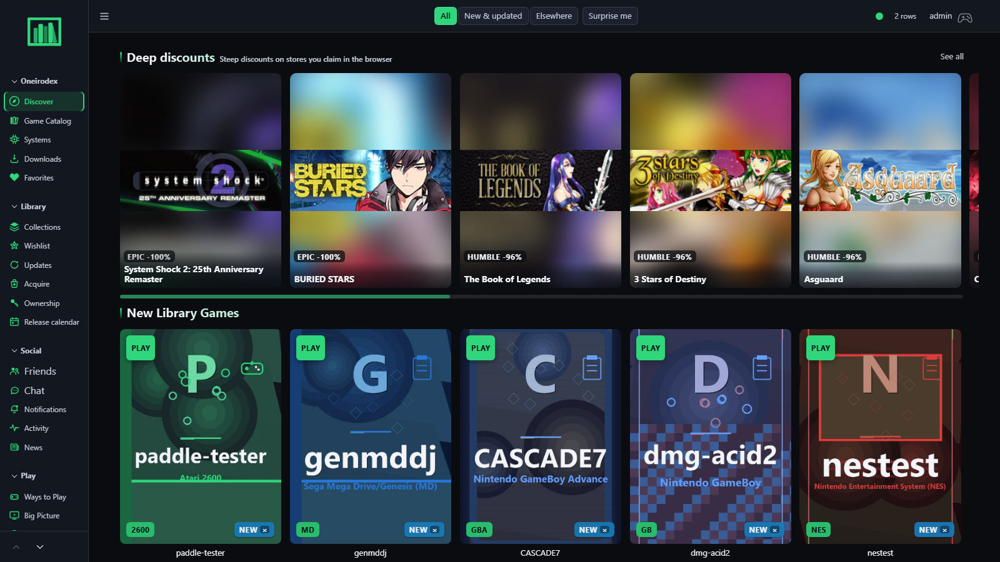

A SELF-HOSTED GAME LIBRARY FOR HOME
Your games.
All in one place.
A shared home for the games your household already owns. Browse every system, know how each title can play, and decide what’s next together.
Your library stays in your care.HOUSEHOLD FIRST
OPEN SOURCE

01 STEP INSIDE
The real app,
from every angle.
These are captures from a running Oneirodex instance. Choose a screen to explore the real product, then open a guided walkthrough below.
✳ All screens shown here are actual Oneirodex captures. Product screenshots are updated from the running app as it changes.
02 THE WHOLE TOOLKIT
Everything your
game room needs.
Oneirodex brings the library, the people, and the operator tools together. Play paths and integrations stay clear about what is and isn’t supported.
Play honestly. Browser, companion, and catalog paths are shown according to each title’s actual system, core, BIOS, and install readiness. Oneirodex does not install from DRM storefronts.
03 SEE IT IN ACTION
Short tours.
Real workflows.
Captured from the app and narrated with captions. Pick a feature and watch the real steps, without a signup or a long detour.
WALKTHROUGH
Choose a walkthrough
Select any video from the list to watch it here.
✳ Walkthroughs and captions are recorded from Oneirodex. Clips are streamed from the public project repository.
04 TRY THE SERVICE
Take it for
a real spin.
Explore the live Oneirodex member workspace in an isolated demo, with sample data and no signup.
Try the real member interface using a disposable sample library. The demo may cold-start and its data can reset after a restart.
A PLACE FOR YOUR WHOLE LIBRARY
Make game night
easy to find.
One home for the games you own, the people you play with, and the next great pick.